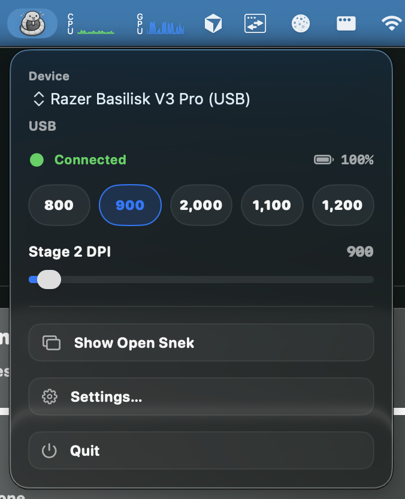
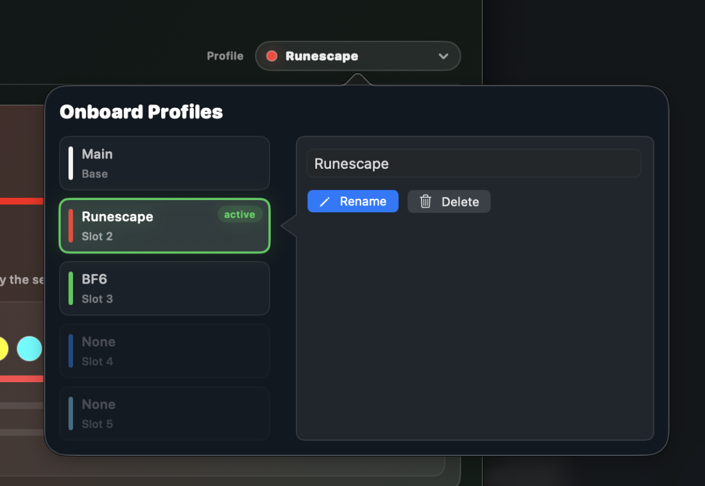
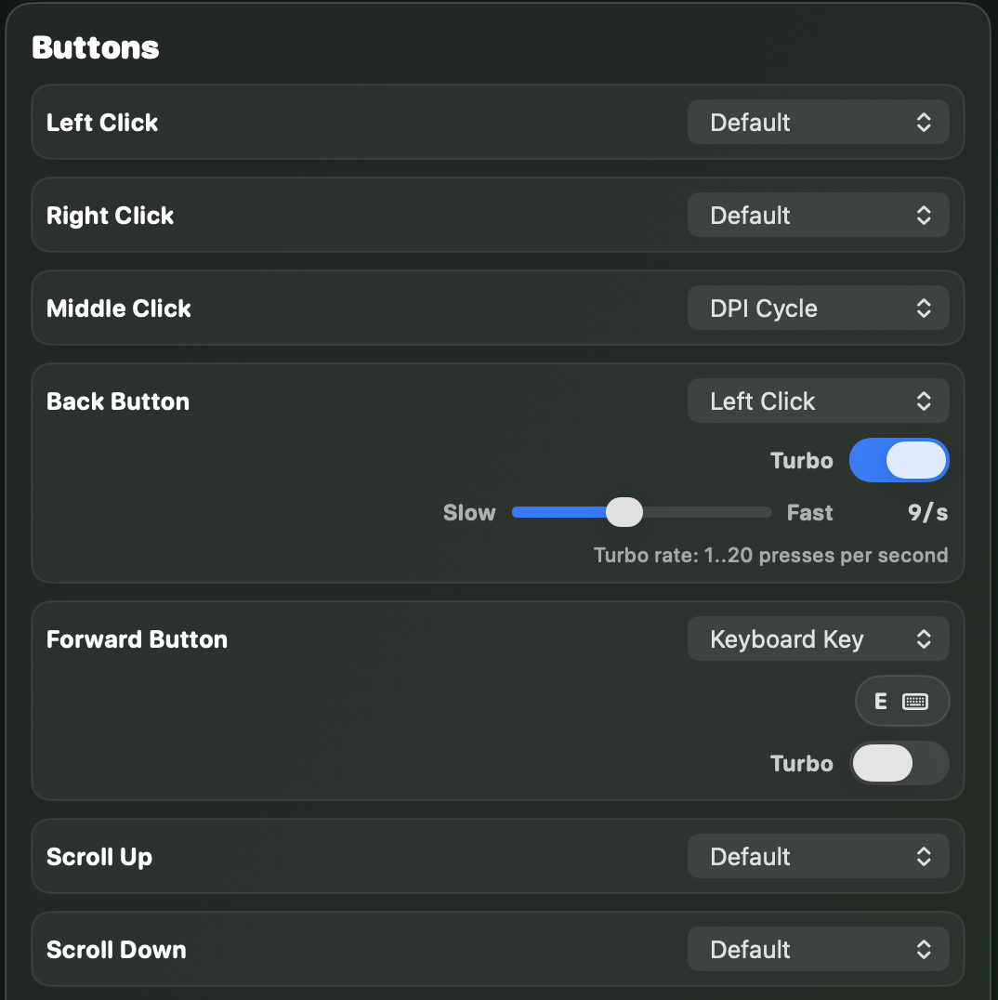

Menu bar DPI control
Quick stage changes stay available without keeping the full window in the way.
Native macOS control for supported Razer mice
A lightweight macOS alternative to Razer Synapse for supported mice.
OpenSnek surfaces the hardware settings mouse owners actually reach for: DPI stages, active stage, lighting, power, poll rate where available, and button remaps.

Core controls

Quick stage changes stay available without keeping the full window in the way.

Manage hardware profiles on supported devices and keep settings on the mouse.

Rebind supported mouse buttons, including keyboard actions and turbo mappings.